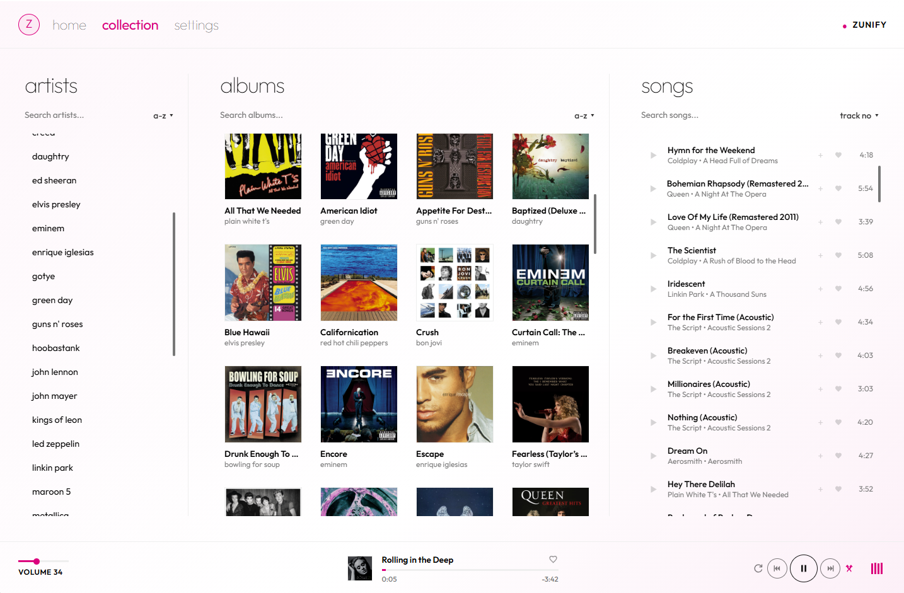
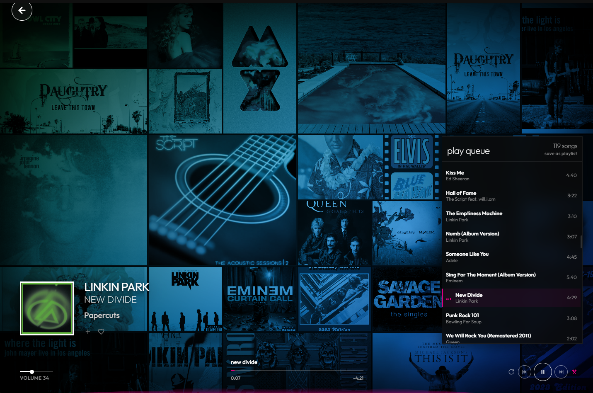
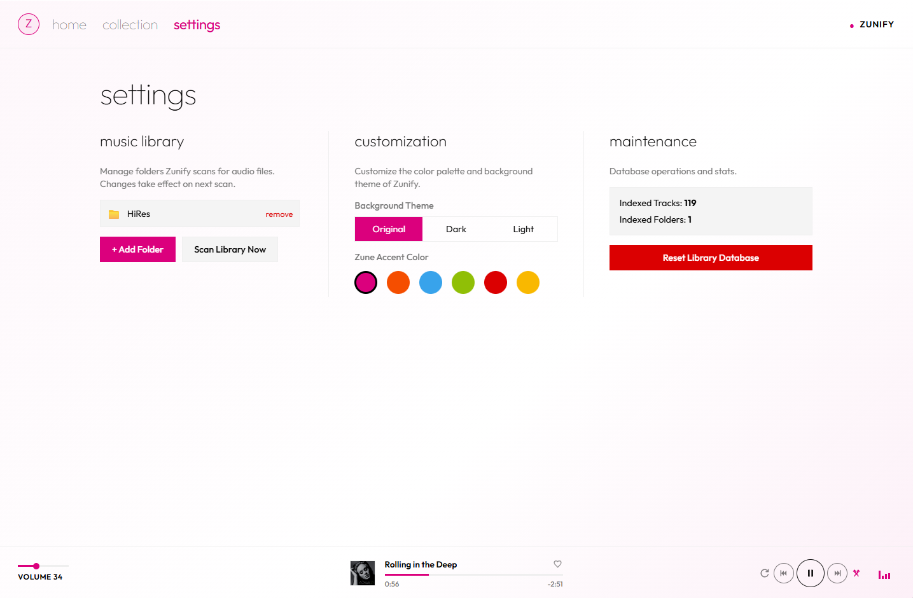

home

Quickplay puts new arrivals, your playlists and recent history one click from playing.
free desktop music player
The Metro soul you remember, rebuilt for Windows, macOS & Linux. Zunify plays the music already on your computer. No accounts. No streaming. No tracking.
press play · the site is the player
01 · why zunify
your music deserves better than an algorithm. no accounts. no ads. no streams to rent. just the files you love, played *beautifully*, the way the *zune* did it.
Quickplay puts new arrivals, your playlists and recent history one click from playing.

Artists, albums and songs side by side in classic Metro columns. Sort, search, play.

A living mosaic of your own album art. The moment everyone remembers, back on your screen.

Six classic Zune accents run through every screen. Pick yours. Try them on this page below.

Point it at your music folders. Original, dark or light. That's the whole setup.
03 · features
flipping, shifting, alive. with big type and a visualizer. the zune moment, rebuilt.
tags & cover art read straight from your files
your library lives on your machine. zunify never phones home.
press play up top. these bars are listening.
favourite, drag to reorder, save the queue in one click.
media keys, OS controls, frameless window. here too: press space to play, ←→ to skip.
original, dark or light themes. six classic zune accents. tap one, the whole page follows.
04 · live demo
This is the actual Zunify interface running in your browser with a sample library. Double-click a song. Open Now Playing. Change the accent in settings.
05 · download
Free forever. Open source. Pick your platform.
Windows 10 & 11 · 64-bit
installer .exe portable .exeSmartScreen? More info → Run anyway. Not code-signed yet.
macOS 11 Big Sur or later
apple silicon .dmg intel .dmg"Damaged" warning? Run xattr -cr /Applications/Zunify.app once.
AppImage · Debian & Ubuntu
appimage x64 debian / ubuntu .debchmod +x the AppImage, then run. Ubuntu 22.04+ needs libfuse2.